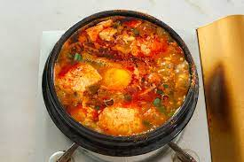

Tofu Soup

Description
Tofu soup is a spicy soft tofu soup filled with soft tofu, vegetables and meat or seafood of your choice. It can be eaten with rice. It is a yummy comfort food, perfect for those wintry snowy nights. This is a simple recipe that uses chicken stock instead of typical anchovy stock.
Ingredients
- soon tofu
- egg
- garlic
- green onion
- white onion
- kimchi
- korean chili powder
- meat or seafood
- chicken stock
- cooked rice
Instructions
- Chop up garlic, white onion, and green onion
- Heat up garlic and onion in pan
- Add meat and cook it
- Add kimchi and then add chicken stock/broth
- Add soon tofu and break it up gently
- Add korean chili powder to taste
- Crack egg over top and let it cook
- Sprinkle chopped green onion and serve with rice